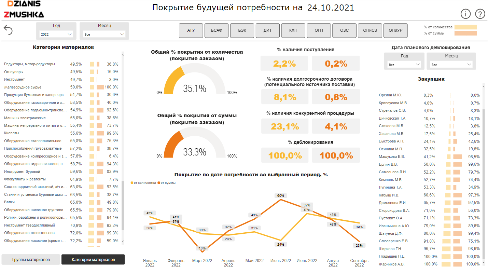
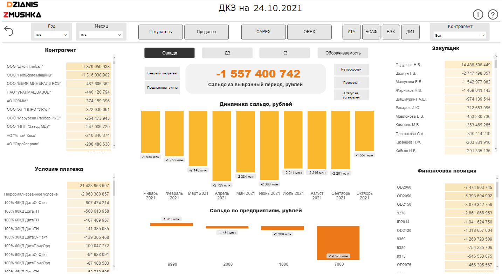

Supply Reporting
The goal of the project is to supplement the implemented product with new indicators (the share of electronic document management, receivables and payables, material requirement planning and the share of SRM). The previous indicators were implemented by another contractor according to the architecture reflected above, respectively, all new indicators had to be implemented in Analysis Services, complementing the existing cube (in Power BI, when live connected to Analysis Services, you cannot use other multidimensional models at the same time).

The source systems were SAP and SQL databases. Data from SAP systems were extracted through SAP Business Warehouse (BW) sub-staging database, because it is easier to extract data to SQL from BW than, for example, from ERP, MDG, SRM, and from these systems it is not difficult to extract data into the BW.
Additional requirements for the product were drill up/down/through, filter by the required attributes, open SAP documents and other weblinks through Power BI, show dynamical tooltips and other details.
About 40 dimensions and 60 measures were used in the process of implementing these indicators.